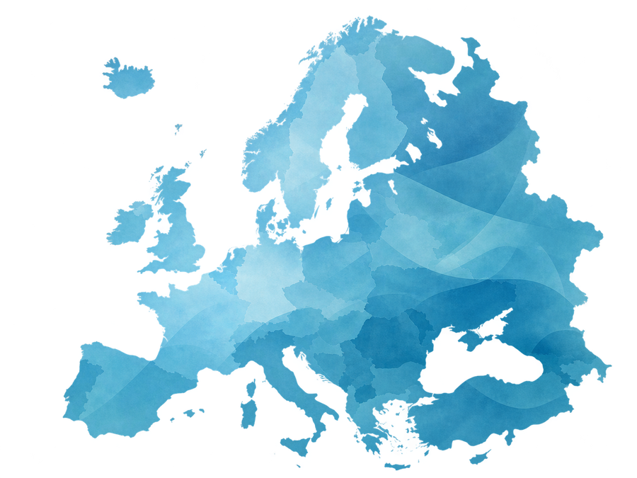
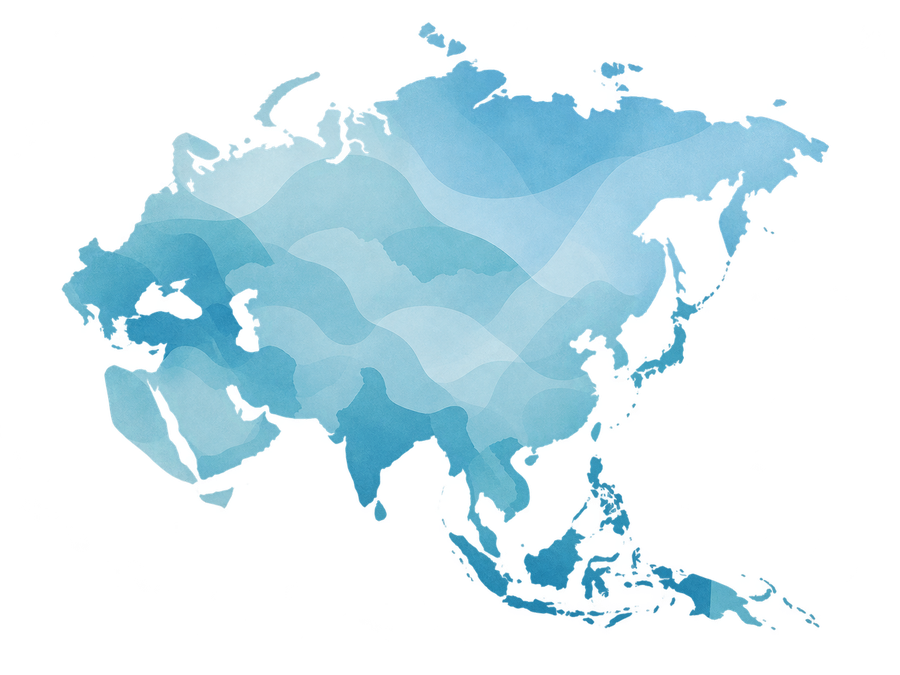
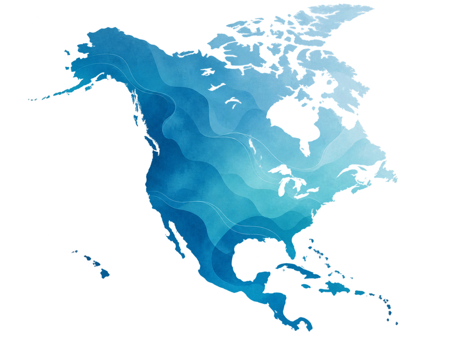
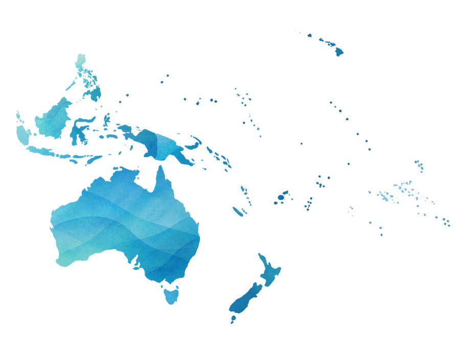

Digitale Freiheit: Worum geht es hier?
Wer remote arbeitet, reist oder über Auswandern nachdenkt, schaut oft zuerst auf Kosten, Sicherheit, Klima und Internet. Doch mindestens genauso wichtig ist die Frage: Wie frei und privat ist dein digitaler Alltag in einem Land?
Ein Staat kann schnelles Internet und moderne digitale Dienste haben – und trotzdem weitreichende Überwachungsbefugnisse, schwache Kontrollen oder starke Einschränkungen für Online-Äußerungen besitzen. Deshalb betrachten wir nicht nur einen einzelnen Score, sondern mehrere Ebenen gleichzeitig.
Was ist Freedom House und warum nutzen wir es als Quelle?
Freedom House veröffentlicht internationale Berichte zu politischen Rechten, Bürgerrechten und digitaler Freiheit. Für unsere Sicherheitsreihe ist Freedom House eine von mehreren Quellen, weil die Berichte internationale Vergleiche ermöglichen und die Methodik öffentlich beschrieben wird.
Wichtig: Freedom House ist nicht unsere eigene Bewertung. Offizielle Bewertungen werden immer als externe Quelle gekennzeichnet. Unsere Smart Remote Life Privacy-Ampel entsteht separat aus mehreren Informationsquellen.
Die Organisation veröffentlicht unter anderem die Berichte Freedom in the World und Freedom on the Net.
Zur Originalquelle →Bewertet politische Rechte und Bürgerrechte. Der Bericht ist kein spezielles Datenschutz- oder Überwachungsranking.
Zum Bericht 2026 →Untersucht Menschenrechte im digitalen Raum, darunter Zugangshürden, Inhaltsbeschränkungen und Verletzungen von Nutzerrechten.
Zum Bericht 2025 →Was ist Five Eyes?
Five Eyes ist eine besonders enge Geheimdienstpartnerschaft zwischen den USA, dem Vereinigten Königreich, Kanada, Australien und Neuseeland. Die Zusammenarbeit entwickelte sich aus dem UKUSA-Abkommen und umfasst insbesondere den Austausch von Geheimdienstinformationen sowie Signals Intelligence – also elektronische Nachrichten- und Signalaufklärung.
Für unseren Vergleich ist Five Eyes deshalb ein relevantes Merkmal. Es ist aber kein Ranking für Privatsphäre oder Datenschutz.
Mitgliedstaaten
Auch Staaten außerhalb dieses Bündnisses können weitreichende Überwachungsbefugnisse und internationale Geheimdienstkooperationen besitzen.
So analysieren wir digitale Freiheit und staatliche Überwachung
Ein einzelner Score reicht nicht aus, um digitale Freiheit zu beurteilen. Deshalb prüfen wir für jedes Land mehrere Bereiche und unterscheiden konsequent zwischen Rechtslage, technischen Möglichkeiten und belegter Praxis.
| Bereich | Was wir prüfen | Warum das wichtig ist |
|---|---|---|
| Datenschutzrecht | Gesetze, Grundrechte, individuelle Ansprüche und zuständige Behörden | Welche Rechte besitzen Menschen gegenüber Staat und Unternehmen? |
| Überwachungsbefugnisse | Rechtliche Möglichkeiten von Polizei und Nachrichtendiensten | Welche Eingriffe dürfen Behörden unter welchen Voraussetzungen vornehmen? |
| Kommunikation & Geräte | Zugriffsmöglichkeiten auf Kommunikation, Geräte oder Metadaten, soweit belegbar | Wie weit können Ermittlungs- oder Sicherheitsbehörden gehen? |
| Datenspeicherung | Aufbewahrungspflichten, Fristen und Zugriff auf gespeicherte Daten | Welche Daten bleiben wie lange verfügbar? |
| Kontrolle | Gerichte, Parlamente, Datenschutz- und Aufsichtsbehörden | Wie stark werden staatliche Eingriffe kontrolliert? |
| Internet- & Meinungsfreiheit | Zensur, Netzsperren, Strafverfolgung und dokumentierte Einschränkungen | Wie frei können Menschen online kommunizieren? |
| Internationale Kooperation | Five Eyes und andere belegte Zusammenarbeit | Datenaustausch endet nicht zwingend an der Landesgrenze. |
Was bedeutet die Smart Remote Life Privacy-Ampel?
Zusätzlich zu offiziellen Quellen erstellen wir eine eigene redaktionelle Einordnung. Die Ampel soll komplexe Rechts-, Kontroll- und Überwachungsstrukturen schneller verständlich machen. Sie ist kein offizielles Ranking und stammt nicht von Freedom House oder einer anderen genannten Organisation.
Starke Rechte und Kontrollen, vergleichsweise geringe Hinweise auf breite staatliche digitale Überwachung.
Grundsätzlich gute Schutzmechanismen, aber erkennbare Einschränkungen oder relevante Befugnisse.
Deutliche Überwachungsmöglichkeiten, Datenschutzprobleme oder schwächere Kontrollen.
Sehr weitreichende Überwachung, schwache Kontrolle, massive digitale Einschränkungen oder Zensur.
Welche Regionen untersuchen wir?
In den Region-Guides vergleichen wir jeweils ausgewählte Länder nach derselben Methodik. Dadurch lassen sich starke und problematische Beispiele direkt gegenüberstellen, ohne die Kriterien von Region zu Region zu verändern.





 KI
KI
Was kannst du selbst für deine digitale Freiheit tun?
Kein einzelnes Tool kann Gesetze, staatliche Befugnisse oder schlechte Datenschutzstandards verschwinden lassen. Trotzdem kannst du im Alltag sehr viel dafür tun, unnötige Datenspuren zu reduzieren und deine wichtigsten Konten, Geräte und Verbindungen besser zu schützen.
Digitale Selbstverteidigung bedeutet deshalb nicht, sich komplett unsichtbar machen zu wollen. Es geht vielmehr darum, bewusst zu entscheiden, welche Daten du preisgibst, welchen Diensten du vertraust und welche Schutzschichten du für deine persönliche Situation tatsächlich brauchst.
- Nutze starke, einzigartige Passwörter und wenn möglich einen Passwortmanager.
- Aktiviere Zwei-Faktor-Authentifizierung für wichtige Konten.
- Halte Betriebssystem, Browser und Apps aktuell.
- Prüfe App-Berechtigungen und teile nur die Daten, die wirklich notwendig sind.
- Sei bei öffentlichem WLAN und unbekannten Netzwerken besonders vorsichtig.
- Wähle Privacy- und Security-Tools nach deinem konkreten Risiko – nicht nach Werbeversprechen.
Was bringt ein VPN wirklich?
Ein VPN verschlüsselt den Datenverkehr zwischen deinem Gerät und dem VPN-Anbieter und kann dadurch verhindern, dass dein lokales Netzwerk oder dein Internetanbieter denselben direkten Einblick in deine Zielverbindungen hat wie ohne VPN. Gleichzeitig wird der VPN-Anbieter selbst zu einem neuen Vertrauenspunkt.
Ein VPN macht dich nicht automatisch anonym. Eingeloggte Konten, Browser-Fingerprinting, Cookies oder andere Datenquellen verschwinden dadurch nicht. Deshalb betrachten wir VPNs als ein mögliches Werkzeug innerhalb eines größeren Sicherheitskonzepts – nicht als Allzwecklösung.
Quellen & Transparenz
Unsere Länderanalysen beruhen nicht auf einer einzigen Organisation. Je nach Land kombinieren wir offizielle Gesetze, Behörden, Gerichte, Kontrollberichte und weitere belastbare Quellen. Die wichtigsten Nachweise werden in den jeweiligen Länderabschnitten verlinkt.
Freedom House
Five Eyes / UKUSA
Digitale Selbstverteidigung & VPN
Datenstand dieser Hauptseite: August 2026. Gesetze, Berichte und politische Rahmenbedingungen können sich ändern. Die Region- und Länder-Guides erhalten deshalb jeweils einen eigenen Aktualisierungsstand.